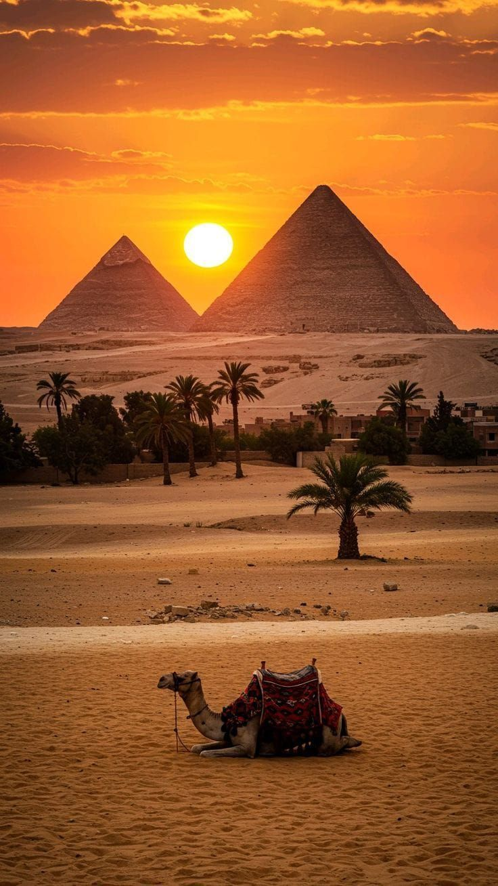
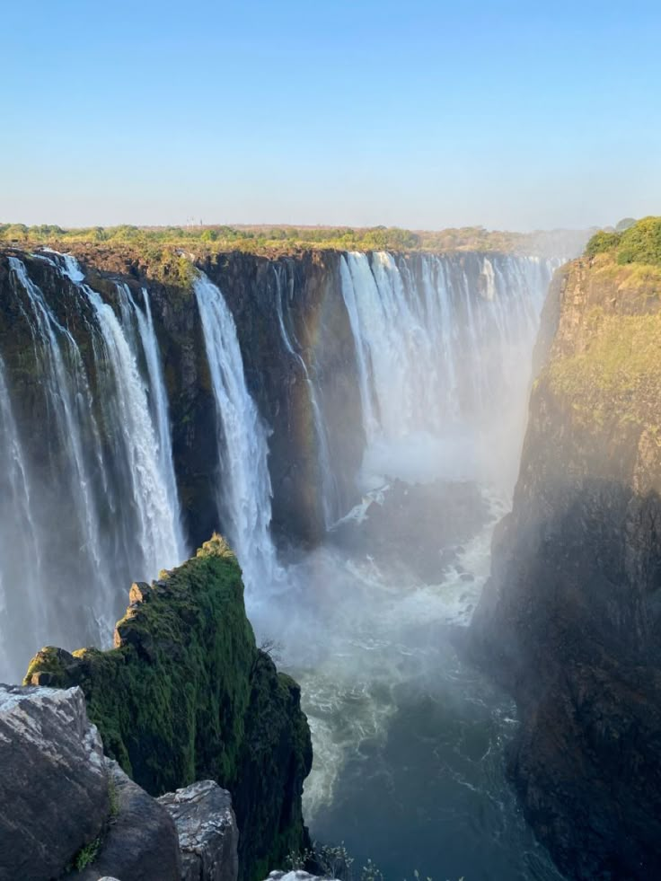

Egypt
Explore ancient wonders like the Pyramids, Nile River cruises, and Red Sea adventures.

Zimbabwe
Witness the mighty Victoria Falls and explore incredible safaris in Hwange National Park.

Tanzania
See the Serengeti migration, climb Mount Kilimanjaro, and unwind on Zanzibar’s beaches.

South Africa
Enjoy Cape Town’s Table Mountain, Kruger safaris, and stunning coastal adventures.